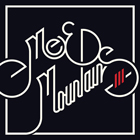
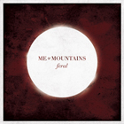
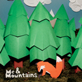

"Who are they?" you may ask.
If ELO had a kid with Weezer, then Queen and The Killers had a kid, and those two kids had a kid and that kid grew up hanging out with Black Sabbath, The Beach Boys, and The Who, then you'd get Me & Mountains.
Want to play a show with us? Just say "Hi"? Talk about feelings?
Releases
-

III E.P.
2012
BandcampFour song EP released under Gas Daddy Go Records. Recorded and produced in The Smith Basement. Mixed by Tim Krug.
-

Feral L.P.
2011
Bandcamp iTunesRecorded and produced in The Smith Basement. Mixed by Brian Whitten at Centre City Studios.
-

Me & Mountains E.P.
2010
Bandcamp iTunesMe & Mountains' first release. Recorded and Produced by Derl at Fictionband Mechanics